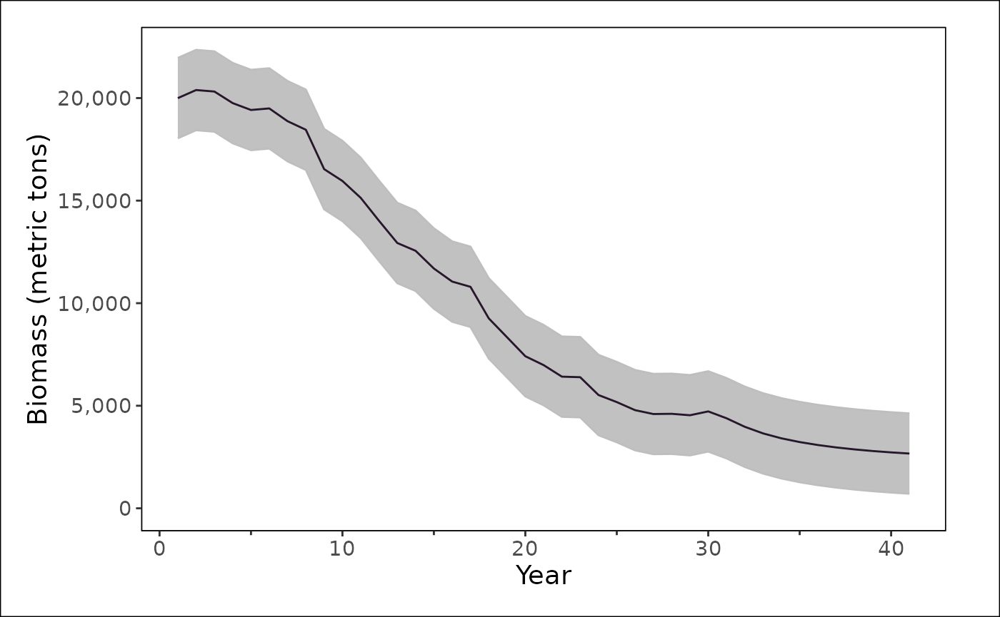

Projections in FIMS
Projections in FIMS can occur during the model-fitting process. That is, you can extend your time series as many years into the future that you wish with fixed values of catch or fixed fishing mortality values to project the population forward in time while estimating parameters. This dual process during the estimation phase allows you to set priors on future values and integrate estimated uncertainty into the projection period.
As we work to set up various inputs and outputs for necessary management quantities for each region, we encourage you to join the FIMS Discussion Board to voice your thoughts about quantities that should be included. Second, please report bugs in the code to our Issues page.
Without projections
The code below uses the built-in data within FIMS and sets up a simple catch-at-age configuration object that will work with the data. These data and configuration objects will be used for to create an extended data set in the next section. More details about the chunk below can be found in the introductory vignette.
# Bring the package data into your environment
data("data1")
# Prepare the package data for being used in a FIMS model
data_4_model <- FIMSFrame(data1)
# Create default model configurations based on the data
default_configurations <- create_default_configurations(data = data_4_model)Projections
years_of_projection <- 10Data
Below, we show how you can update your data to include 10 years of
projections by extending the terminal year. Second,
FIMS::FIMSFrame() will fill in missing years of data for
each data type based on your new maximum year in your data. These
missing years use a value of -999 for each data type but users must
provide the uncertainty level associated with the missing data because
by default it will be filled with NA.
In the future, we will integrate more of the process below coded below into wrapper functions but as of FIMS version 0.8.0 some manipulation of the data is needed.
# Add a single row of landings to the original data for the maximum year you
# want to project to
data1_with_extra_year <- dplyr::add_row(
data1,
type = "landings",
timing = get_end_year(data_4_model) + years_of_projection,
name = "fleet1",
value = -999,
unit = "mt"
)
data_4_projections <- data1_with_extra_year |>
# Make a FIMSFrame object out of this data frame with the extra row to add all
# of the other missing years for each data type
FIMSFrame() |>
# Extract the data object
get_data() |>
# Change the uncertainty values for each data type these values will
# propagate forward into the log standard deviation values in the model
# specifications
dplyr::mutate(
uncertainty = ifelse(
type %in% c("landings") & value == -999,
0.00999975,
uncertainty
),
uncertainty = ifelse(
type %in% c("index") & value == -999,
0.19804220,
uncertainty
),
uncertainty = ifelse(
type %in% c("age_comp", "length_comp") & value == -999,
0,
uncertainty
)
) |>
# Make a FIMSFrame out of the altered data frame
FIMSFrame()Model
The default configuration from a model without projections can be used as the default configuration. After the parameter configuration is created it must be manipulated to alter the default parameters for things like selectivity, fishing mortality, etc. We believe that it is easier to alter default configurations rather than creating your own from scratch. So, much of what is done below for projections was also done in the introductory vignette.
The major difference below compared to a model without projections is
that the recruitment deviations for the projection period are fixed at
zero. Because the new data object has all years,
FIMS::create_default_parameters() will ensure that all
time-series parameters, e.g., natural mortality, have the correct
dimensions.
# Take the default configuration with the new data to create some default
# parameters that we alter to make the model behave a little better
parameters_projection <- create_default_parameters(
configurations = default_configurations,
data = data_4_projections
) |>
tidyr::unnest(cols = data) |>
# Update log_Fmort initial values for Fleet1
dplyr::rows_update(
tibble::tibble(
fleet_name = "fleet1",
label = "log_Fmort",
time = get_start_year(data_4_projections):
get_end_year(data_4_projections),
value = log(c(
0.009459165, 0.027288858, 0.045063639,
0.061017825, 0.048600752, 0.087420554,
0.088447204, 0.186607929, 0.109008958,
0.132704335, 0.150615473, 0.161242955,
0.116640187, 0.169346119, 0.180191913,
0.161240483, 0.314573212, 0.257247574,
0.254887252, 0.251462108, 0.349101406,
0.254107720, 0.418478117, 0.345721184,
0.343685540, 0.314171227, 0.308026829,
0.431745298, 0.328030899, 0.499675368,
rep(0.499675368, years_of_projection)
))
),
by = c("fleet_name", "label", "time")
) |>
# Update selectivity parameters and log_q for survey1
dplyr::rows_update(
tibble::tibble(
fleet_name = "survey1",
label = c("inflection_point", "slope", "log_q"),
value = c(1.5, 2, log(3.315143e-07))
),
by = c("fleet_name", "label")
) |>
# Update log_devs in the Recruitment module (time steps 2-end)
dplyr::rows_update(
tibble::tibble(
label = "log_devs",
time = (get_start_year(data_4_projections) + 1):
get_end_year(data_4_projections),
value = c(
0.43787763, -0.13299042, -0.43251973, 0.64861200, 0.50640852,
-0.06958319, 0.30246260, -0.08257384, 0.20740372, 0.15289604,
-0.21709207, -0.13320626, 0.11225374, -0.10650836, 0.26877132,
0.24094126, -0.54480751, -0.23680557, -0.58483386, 0.30122785,
0.21930545, -0.22281699, -0.51358369, 0.15740234, -0.53988240,
-0.19556523, 0.20094360, 0.37248740, -0.07163145,
# recruitment deviations are fixed at zero for the projections
rep(0, years_of_projection)
)
),
by = c("label", "time")
) |>
# Fix the projection log recruitment deviations at zero
dplyr::rows_update(
tibble::tibble(
label = "log_devs",
time = (get_end_year(data_4_projections) - years_of_projection + 1):
get_end_year(data_4_projections),
estimation_type = rep("constant", years_of_projection)
),
by = c("label", "time")
) |>
# Update log_sd for log_devs in the Recruitment module
dplyr::rows_update(
tibble::tibble(
module_name = "Recruitment",
label = "log_sd",
value = 0.4
),
by = c("module_name", "label")
) |>
# Update inflection point and slope parameters in the Maturity module
dplyr::rows_update(
tibble::tibble(
module_name = "Maturity",
label = c("inflection_point", "slope"),
value = c(2.25, 3)
),
by = c("module_name", "label")
) |>
# Update log_init_naa values in the Population module
dplyr::rows_update(
tibble::tibble(
label = "log_init_naa",
age = 1:12,
value = c(
13.80944, 13.60690, 13.40217, 13.19525, 12.98692, 12.77791,
12.56862, 12.35922, 12.14979, 11.94034, 11.73088, 13.18755
)
),
by = c("label", "age")
)
# TODO: Figure out how to add SSB_ratio priorModel fit
Regardless if there are projections or not, the model is fit using
the FIMS::fit_fims(), which facilitates that the model
output will be in the same format that users are used to.
projection_fit <- parameters_projection |>
initialize_fims(data = data_4_projections) |>
fit_fims(optimize = TRUE)## ✔ Starting optimization ...
## ℹ Restarting optimizer 3 times to improve gradient.
## ℹ Maximum gradient went from 0.01568 to 0.00186 after 3 steps.
## ✔ Finished optimization
## ✔ Finished sdreport
## ℹ FIMS model version: 0.8.0
## ℹ Total run time was 2.52628 minutes
## ℹ Number of parameters: fixed_effects=87, random_effects=0, and total=87
## ℹ Maximum gradient= 0.00186
## ℹ Negative log likelihood (NLL):
## • Marginal NLL= 3166.0503
## • Total NLL= 3166.0503
## ℹ Terminal SB= 990.87314
clear()Model summaries
We use {stockplotr} to plot the model results. In the code below, we
pass a single model to stockplotr::plot_biomass() but the
list can contain multiple models, where the start and end year of each
model that is included need not align. Thus, if we had fit the model
without projections we could have plotted that here as well for
comparison.
stockplotr::plot_biomass(
list(
"age" = get_estimates(projection_fit) |>
dplyr::mutate(
uncertainty_label = "se",
year = year_i,
estimate = estimated
)
)
)## Warning: Unknown or uninitialised column: `era`.## Warning in max(dat$year[dat$era == era_name], na.rm = TRUE): no non-missing
## arguments to max; returning -Inf## Warning: Removed 1 row containing missing values or values outside the scale range
## (`geom_hline()`).## Warning: Removed 1 row containing missing values or values outside the scale range
## (`geom_text()`).